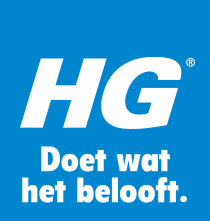
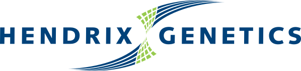
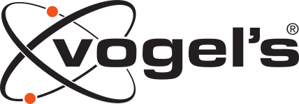
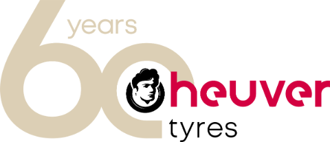
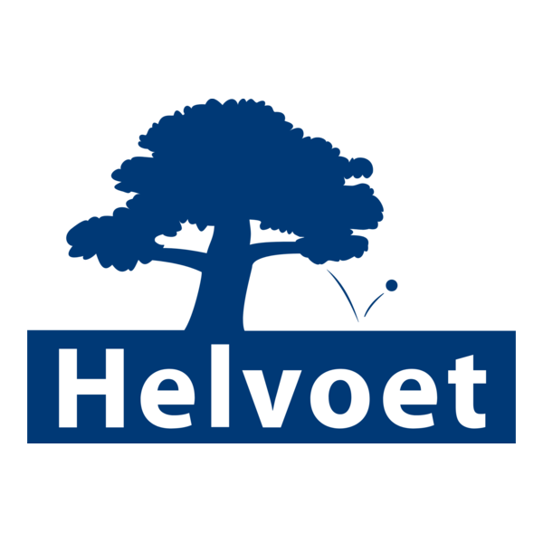

Certis Europe
Financiële oplossingsarchitectuur en uitrol
Als Solution Architect Finance en roll-outconsultant werkte APu aan de financiële oplossing en de uitrol van Dynamics 365 Finance & Operations.
Persoonlijk advies en begeleiding bij uw ERP-project.
PROJECTERVARING BIJ ONDER MEER








Inhoudelijke kennis van het systeem en de mogelijkheden.
Maakt zich uw bedrijfsprocessen snel eigen en vertaalt uw wensen.
Weet hoe een ERP-leverancier werkt en verbindt beide partijen.
Van de eerste keuze tot de uitvoering. Ondersteuning waar uw ERP-project die nodig heeft.
Bespreek uw projectjaar ervaring
met ERP en bedrijfsprocessen.
APu Consultancy biedt advies en ondersteuning bij de selectie, implementatie en optimalisatie van ERP-systemen. De expertise ligt in projectmanagement en Microsoft Dynamics 365 Finance & Operations, met bijzondere aandacht voor financiële inrichting en bedrijfsprocessen.
Maak kennis met APuVan financiële expertise tot projectmanagement. Een selectie van opdrachten en de bijdrage van APu Consultancy.
Als Solution Architect Finance en roll-outconsultant werkte APu aan de financiële oplossing en de uitrol van Dynamics 365 Finance & Operations.
APu vervulde de rol van interne vraagbaak voor Dynamics AX2012 en ondersteunde optimalisaties in Dynamics 365 Finance & Operations.
APu vervulde de rol van projectmanager voor de upgrade naar Microsoft Dynamics AX 2009.
Een selectietraject, een lopende implementatie of een vraag over Dynamics 365? Laten we uw situatie bespreken.
Stuur een bericht